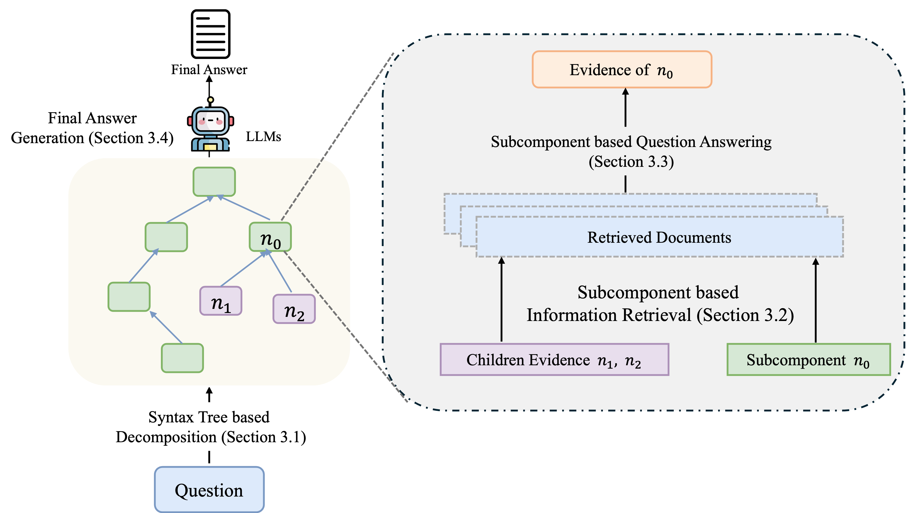

TreeRare: Syntax Tree-Guided Retrieval and Reasoning for Knowledge-Intensive Question Answering
EMNLP, 2025
We use syntax trees to guide information retrieval and reasoning for knowledge-intensive question answering.
Hello! I name is Boyi Zhang. I am a first year PhD student at Hong Kong University of Science and Technology (HKUST), supervised by Prof. Yangqiu Song. I received Bachelor of Science degree in computer science and applied mathematics at the University of Rochester. I was so fortune to research under Prof. Hangfeng He from 2024 to 2026.
My research focuses on artificial intelligence, particularly natural language processing, large language models, and intelligent agent systems. I am interested in developing efficient, robust, and adaptive methods that enable language-model agents to interact with, reason over, and learn from large-scale heterogeneous data.

EMNLP, 2025
We use syntax trees to guide information retrieval and reasoning for knowledge-intensive question answering.
Clear Water Bay, HKSAR
Ph.D. · In progress
Rochester, NY, USA
B.S. in Computer Science and Applied Mathematics
I enjoy playing badminton, hiking, and scuba diving in my spare time.